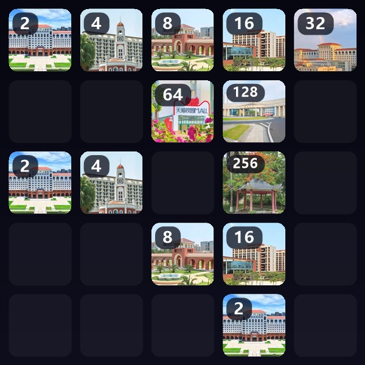

01
About
关于我
一个刚上大一、对什么都想试一下的人。
我是孙路遥，海南大学电子科学与技术专业大一学生。 高中时做过 Python 社社长，从那时候起就习惯了「先动手做出来，再回头补原理」。
现在我最爱干的事是用 AI 大模型加 Python 折腾点小东西 —— 写个脚本、做个小工具、把重复的事情自动化掉。技术不算深，但动手这件事我一直没停。
学习之外，我在动漫里放松，骑自行车放空，打乒乓出汗。也喜欢和人聊天， 尤其是听别人讲他们正在做什么。
坐标海南 · 海口
专业电子科学与技术
年级大一
正在学Python · AI 工具
Skills
技能栈
标了掌握程度，也标了我在哪些地方花过最多时间。
会用的 Tools I Use
平时真正在用的东西，不吹牛，如实标。
正在学 Learning
刚起步、还在一点点啃的部分。
其他 Toolbox
顺手就会用的东西，以及正在学的东西。
Work
精选作品
三个都能直接玩的网页小游戏。全部是单文件、零依赖，点进去就能玩。
Journey
经历时间线
一路走过来的关键节点。
2025 — 现在
电子科学与技术 · 本科在读
海南大学 · 海口
刚开始大学生活，在补数学和专业基础，同时把 Python 和 AI 工具继续用起来。
高中阶段
Python 社社长
高中
带社团、讲基础、和同学一起写小脚本。第一次发现「把我会的东西讲给别人听」比想象中难，也比想象中有意思。
一直在做
自学 · 用 AI 做小项目
自己的电脑前
跟着 AI 学写代码，做过脚本、小工具和这个网页。东西都很小，但每一个都跑起来了。
课余时间
动漫 · 骑车 · 乒乓
操场 / 路上 / 宿舍
看动漫放松，骑车放空，打乒乓出汗。这三件事让我不至于一直坐在电脑前面。